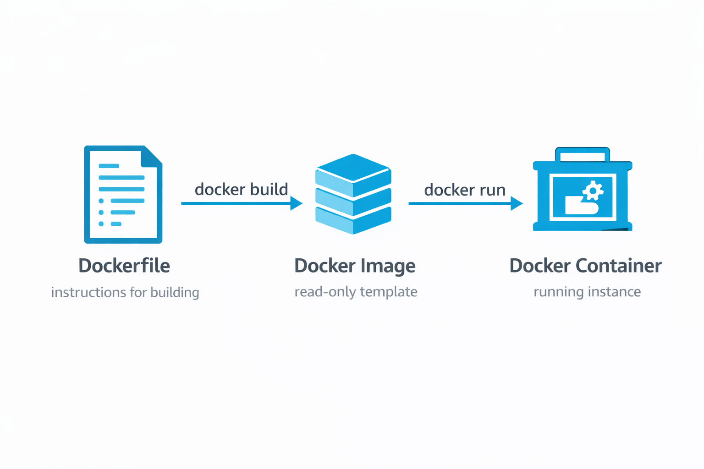

🌟 Real-Life Analogy
Think of Docker like standardized shipping containers in global trade:
Before shipping containers existed, cargo came in all shapes and sizes—boxes, barrels, crates—making loading/unloading ships incredibly slow and complicated. Then someone invented the standard shipping container: a metal box of fixed dimensions that can hold anything inside.
Docker does the same for software: Your application and all its dependencies get packed into a standardized "container" that runs identically on any computer—your laptop, a server in the office, or a cloud datacenter. Just like a shipping container protects cargo from weather and damage, a Docker container isolates your app from differences in operating systems and configurations.
The container (Docker) doesn't care what's inside—could be a Python app, a database, or a website. It just works everywhere! 🚢📦
📖 Detailed Explanation
Docker is a containerization platform that enables you to package applications and their dependencies into lightweight, portable containers. Unlike traditional virtual machines that require a full operating system, Docker containers share the host OS kernel, making them significantly more efficient and faster to start.
A container is created from a Docker image, which serves as a read-only template containing everything needed to run an application: code, runtime, system tools, libraries, and settings. When you deploy a website or application, you can choose between running it on a traditional virtual machine (like EC2) or within Docker containers for improved resource utilization and deployment speed.
🔑 Key Concepts
- Dockerfile: A text file containing instructions to build a Docker image. It defines the base image, working directory, dependencies, and commands needed to create your containerized application.
- Docker Image: A read-only template or blueprint for creating containers. Built using the
docker buildcommand from a Dockerfile. Images are immutable and can be stored in registries. - Docker Container: A running instance of a Docker image. It's a lightweight, isolated process that contains everything needed to run your application. Multiple containers can run from the same image.
- Container Runtime: The underlying software that builds and runs containers. Docker is the main runtime environment that manages the container lifecycle.
- Resource Efficiency: Containers don't pre-allocate full OS or hardware resources like VMs. They share the host machine's kernel and resources dynamically, making them lightweight and fast.
📊 Real-World Scenarios
✅ Best Case Scenario: E-commerce Flash Sale Success
Situation: An online store expects 10x normal traffic for Black Friday. They containerized their application using Docker.
Implementation: The development team created Docker images for their web app, payment service, and inventory system. Each component runs in separate containers with defined resource limits.
Result: When traffic spiked, they quickly spun up 50 additional container instances across their servers in minutes instead of hours. The sale handled 100,000+ simultaneous users without a single crash. After the sale, they scaled back down instantly, saving costs.
Key Learning: Docker's lightweight nature enables rapid scaling to handle traffic spikes efficiently.
❌ Worst Case Scenario: "It Works on My Machine" Disaster
Situation: A development team built an application that worked perfectly on developer laptops (Windows, Mac, Linux) but crashed constantly in production (Ubuntu server).
Problem: Without Docker, the app depended on specific Python versions, library versions, and system configurations that differed between environments. Each developer had slightly different setups.
Result: The production deployment failed repeatedly. The team spent 3 weeks debugging environment issues instead of building features. The project missed its deadline, and the client was furious.
Resolution: They adopted Docker, creating a single container image that guaranteed identical environments everywhere. The infamous "it works on my machine" problem disappeared.
Key Learning: Containers ensure consistency across all environments, eliminating deployment surprises.
⚠️ Edge Case Scenario: Legacy App Modernization
Situation: A bank had a 15-year-old Java application running on outdated servers that couldn't be upgraded without breaking the app.
Challenge: The old app required Java 1.6, which was no longer supported. New servers only supported Java 8+. Complete rewrite would take years and cost millions.
Solution: They containerized the legacy app with Docker, including the exact Java 1.6 environment it needed. The container ran perfectly on modern servers without any code changes.
Outcome: The bank moved to modern infrastructure while keeping the old app running. They bought time to gradually rewrite the application over 2 years instead of rushing.
Key Learning: Containers can preserve legacy environments while enabling infrastructure upgrades.
✅ Best Practices
| Practice | Why It Matters | How to Implement |
|---|---|---|
| Use Official Base Images | Ensures security and reliability | Start Dockerfiles with verified images like FROM python:3.9-slim |
| Minimize Image Layers | Reduces image size and build time | Combine RUN commands using && to reduce layers |
| Never Store Secrets in Images | Prevents security breaches | Use environment variables or secret management tools |
| Tag Images Properly | Enables version control and rollbacks | Use semantic versioning: myapp:1.2.3 |
| Implement .dockerignore | Excludes unnecessary files from build context | Create .dockerignore file to exclude node_modules, .git, etc. |
💼 Practical Implementation
Method 1: Using Docker CLI
Step 1: Create a simple Dockerfile for a Python web application
# Dockerfile
FROM python:3.9-slim
WORKDIR /app
COPY requirements.txt .
RUN pip install -r requirements.txt
COPY . .
EXPOSE 5000
CMD ["python", "app.py"]Step 2: Build the Docker image
docker build -t mywebapp:1.0 .Expected output: Successfully built [image-id]
Step 3: Run the container
docker run -d -p 5000:5000 --name webapp mywebapp:1.0Explanation: -d runs in background, -p maps ports, --name gives container a name
Step 4: Verify the container is running
docker psYou should see your webapp container listed with status "Up"
Step 5: View container logs
docker logs webappStep 6: Stop and remove the container
docker stop webapp
docker rm webappMethod 2: Using AWS Console with ECS
Step 1: Navigate to AWS Console → ECS
Step 2: Click "Create Cluster" → Choose "EC2 Linux + Networking"
Step 3: Configure cluster: Name, instance type, number of instances
Step 4: Create Task Definition → Add container definition
Step 5: Specify your Docker image from ECR or Docker Hub
Step 6: Configure port mappings (host:container)
Step 7: Create Service to run your task continuously
Step 8: Monitor in ECS console dashboard
🔧 Troubleshooting
| Issue | Possible Cause | Solution |
|---|---|---|
| Build fails with "file not found" | COPY command references missing file | Verify file exists in build context, check .dockerignore |
| Container exits immediately | No foreground process running | Ensure CMD/ENTRYPOINT runs a long-lived process |
| "Port already in use" error | Another container using same port | Stop other container or use different port mapping |
| Cannot connect to Docker daemon | Docker service not running | sudo systemctl start docker |
📊 Visual Architecture

Figure 1: Docker Workflow - From Dockerfile to Running Container
🎯 Key Takeaways
- Docker containers are like shipping containers for software—standardized, portable, and consistent
- Containers share the host OS kernel, making them 10x more efficient than virtual machines
- A Dockerfile → builds → Docker Image → runs → Docker Container
- Containers solve the "works on my machine" problem by guaranteeing identical environments
- One image can create unlimited containers, enabling easy horizontal scaling